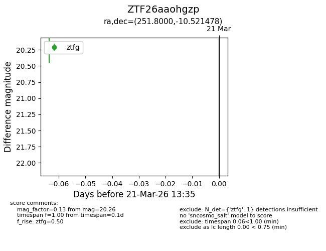
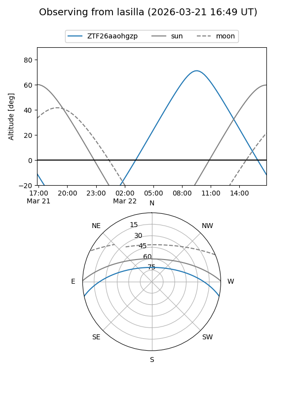
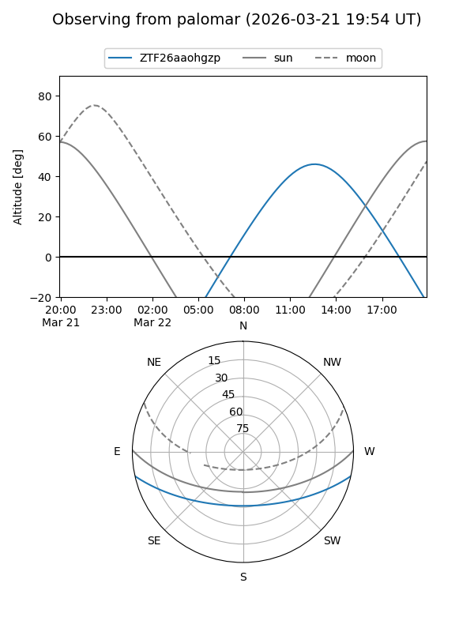

ZTF26aaohgzp
Target ZTF26aaohgzp at 2026-03-21 13:37
Aliases and brokers:
FINK: link
Lasair: link
ALeRCE: link
alt names
ZTF26aaohgzp (ztf,fink_ztf)
Coordinates:
equatorial (ra, dec) = 251.8000,-10.52148
equatorial (HMS+DMS) = 16:47:12.00,-10:31:17.32
galactic (l, b) = (7.8718,+21.60371)
Flags:
Photometry:
last ztfg=20.26
1 ztfg detections
Lightcurve

Visibility


Additional plots